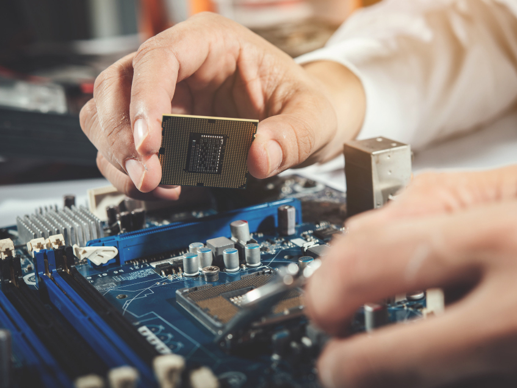

El procesador o CPU (Central Processing Unit) es la unidad central de procesamiento de un ordenador. Digamos que es el cerebro de una computadora el cual realiza instrucciones y tareas recibidas por los distintos componentes del ordenador, haciendo que el funcionamiento del sistema sea correcto. Se conecta a la placa base mediante un zócalo concreto y suele añadirse un disipador de calor para evitar que se caliente demasiado.
Velocidad: La velocidad se mide en Hz, y determina la frecuencia en la que el procesador realiza las operaciones por ciclo, cuanto más alto sea, mayor será la velocidad de tareas que realiza nuestro ordenador.
Núcleos: Los procesadores actuales pueden tener varios núcleos. Cada núcleo es una unidad central de proceso separada e independiente, por lo que cuantos más núcleos posea un procesador, nos permitirá realizar mayor cantidad de tareas simultáneas en la computadora, es decir que cada unidad central de procesamiento realiza una tarea específica. Con esto ganamos mucha eficiencia en el rendimiento de nuestro equipo.
| Dual core: dos núcleos | Quad Core: cuatro núcleos |
| Hexa Core: seis núcleos | Octa Core: ocho núcleos |
| Deca Core: diez núcleos |
Hilos: Es un medio que permite administrar las tareas de un procesador y de sus diferentes núcleos de una forma más eficiente. Divide una tarea en porciones para que parezca que ambas se ejecutan al mismo tiempo haciendo que los recursos del sistema sean administrados de forma más equitativa y eficiente. Generalmente por cada núcleo hay dos hilos, por ejemplo en los procesadores que tienen 6 núcleos y 12 hilos serán capaces de dividir los procesos en 12 tareas distintas en lugar de solamente 6.
Memoria Caché: Es un tipo de memoria extremadamente rápida y de muy poca capacidad que es usada por el procesador y todos sus núcleos para guardar datos de acceso frecuente para que no tengan que ser buscados en otros sistemas de almacenamiento más lentos como la memoria RAM o el disco duro. La caché de la CPU se suele dividir en 4 niveles de implementación; L1, L2, L3 y L4. Cuanto inferior sea el nivel, más rápida y menor capacidad tendrá.
| INTEL | VELOCIDAD | NUCLEOS | HILOS | MEMORIA CACHÉ TOTAL | PRECIO |
| Intel Core i3-12100 | 4.3 GHz | 4 | 8 | 12 MB | 155,29€ |
| Intel Core i5-12600K | 4.9 GHz | 10 | 16 | 20 MB | 347,99€ |
| Intel Core i9-12900 | 5.10 Ghz | 16 | 8 | 30 MB | 665,94€ |
| AMD | VELOCIDAD | NUCLEOS | HILOS | MEMORIA CACHÉ TOTAL | PRECIO |
| AMD Ryzen 5 5600 | 3.5GHz | 6 | 12 | 32MB | 189,13€ |
| AMD Ryzen 7 5800X | 3.8Ghz | 8 | 16 | 32MB | 321€ |
| AMD Ryzen 9 5900X | 3.7 GHz | 12 | 24 | 64MB | 442,49€ |
La placa base es la columna vertebral del ordenador, esa en la que están algunos de los componentes o partes más importantes de tu equipo. La placa base es esa en la que se conectan todos los componentes internos del ordenador, desde el procesador hasta los discos duros, la memoria RAM o la tarjeta gráfica. Cada uno de estos componentes tiene su propia ranura para que puedas conectarla.
En la estructura básica de la placa base destaca la placa de circuito impreso, también conocida como PCB (Printed Circuit Board). Se trata de ese sustrato no conductor de la carga eléctrica sobre el que se colocan los demás componentes. Todos estos son los componentes básicos, esos que vienen preinstalados en la placa base, y que son los que se aseguran de que los subsistemas de la placa base funcionen y puedan establecer las conexiones e intercambios de información por parte del resto de partes que hay en ella.
A continuación, vamos a irte explicando cuáles son esos otros componentes o partes que hay dentro de una placa base, y de la que dependen su correcto funcionamiento.
El chipset es el auténtico cerebro de la placa base. Su nombre significa literalmente conjunto de chips, y su función es controlar el flujo de datos entre diferentes componentes clave del ordenador, como el procesador, la memoria y los diferentes periféricos que haya conectados. En la placa base tienes la tarjeta gráfica, la CPU o los módulos de memoria, y también conectas el monitor y muchos otros. Entre ellos está el propio chipset, que es el responsable de que el resto de componentes puedan comunicarse correctamente entre sí. Es el que controla y organiza los datos entre el procesador y el resto de componentes para que todo funcione correctamente El chipset es el encargado de controlar el tráfico de los datos, el centro de operaciones donde todos se organizan.
Uno de los aspectos que condicionan la calidad de la placa base es su sistema de alimentación eléctrica Viene a ser todo el conjunto interno de componentes que se encargan de la regulación del voltaje interno de la placa base, así como sus fases de alimentación eléctrica.Hay dos componentes de los sistemas de alimentación que son especialmente importante. El primero son los módulos reguladores de voltaje o VRM (Voltage Regulator Module). Los fabricantes de placas base ponen en el VRM varias fases de alimentación, y cada una de ellas actúa como una etapa de rectificación y filtrado para estabilizar la corriente que llega.
Son los componentes de la placa base que adaptan el voltaje de la fuente de alimentación a los componentes de nuestros ordenadores, de manera que no sea insuficiente para que funcionen correctamente y no sean demasiado como para forzar el sistema de refrigeración, o comprometer la salud del componente. El otro componente clave son las fases de alimentación eléctrica, cuya misión es hacer que el procesador o la memoria principal de la placa base tengan una alimentación lo más plana y estable posible, de forma que no haya ningún pico que afecte a su funcionamiento.
La placa base de tu ordenador tiene muchos componentes y circuitos, y algunos de ellos pueden llegar a generar mucho calor, y si algunos componentes alcanzan o superan ciertos umbrales máximos de temperatura durante mucho tiempo podrían dañarse para siempre. Por eso, la mayoría de placas base actuales tienen varios disipadores para que ayuden a evacuar el calor residual al resto de componentes que puede haber en la placa base para ello.
| GamaBaja:Gigabyte H410M S2H V3 | GamaMedia:Gigabyte B550M DS3H | GamaAlta:Asus ROG MAXIMUS Z690 | |
| Chipset | Intel H510 | AMD B550 | Intel® Z690 Chipset |
|---|---|---|---|
| Tamaño | ATX(305 mm × 244 mm) | micro ATX(244 x 244 mm) | EATX(305 × 330 mm) |
| Precio | 34,45€ | 128,16€ | 2989€ |
| SDD M.2 | Precio | Tamaño | Consumo | Velocidad(escritura y lectura) |
|---|---|---|---|---|
| Kioxia EXCERIA | 58,44€ | 500GB | 3,9W | 1700MB / s |
| Samsung 970 EVO Plus | 132,38€ | 1TB | 6W | 3500 MB/s |
| Corsair Force | 509,99€ | 2TB | 6,5 W | 4900MB/s |